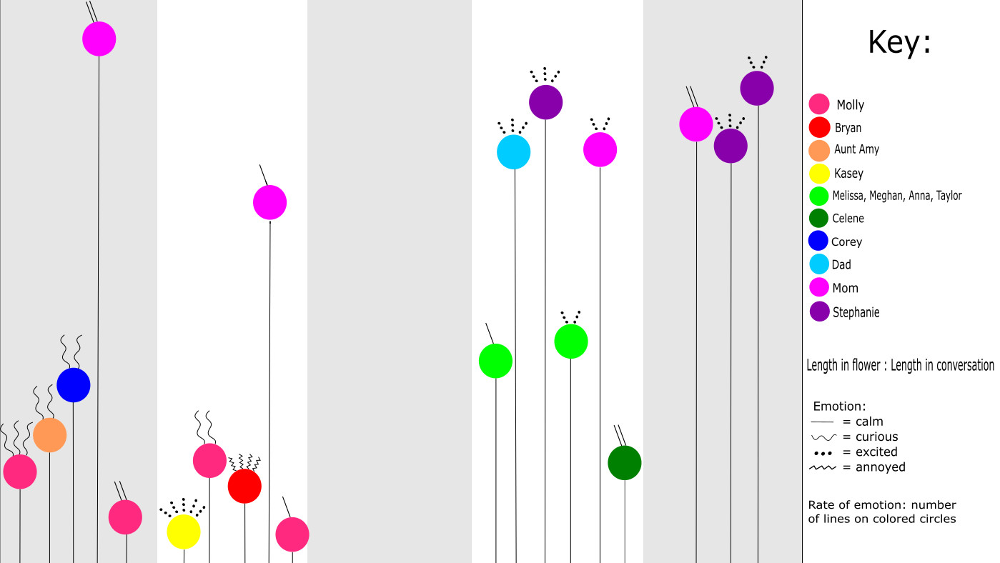

Messages sent with the end-to-end level of encryption are only readable in two places: The sender’s and recipient’s devices — most likely their smartphones. These messages aren’t stored on company servers, and as a result, can’t be mined to help advertisers or read by law enforcement officials, even with a proper warrant. These messages can only be accessed by law officials from a device that either sent or received a message.

What messaging apps protect your privacy? WhatsApp, FaceTime, iMessage (only encrypted to someone who also has iMessage), Signal, Confide, and Cyber Dust. These apps use an end-to-end encryption which means your message from your end of the phone is encrypted in a way that only the recipient can decrypt.
What messaging apps don’t protect your privacy? Snapchat, Kik, Twitter, Yahoo Messenger, Skype, Instagram, Hangouts, and Text messages (SMS) – these can be called into court to help dispute legal matters. These apps use an encryption in transit, meaning the messages are only secure between your phone and the nearest cell tower, but not the recipient.
Here is a placeholder paragraph.